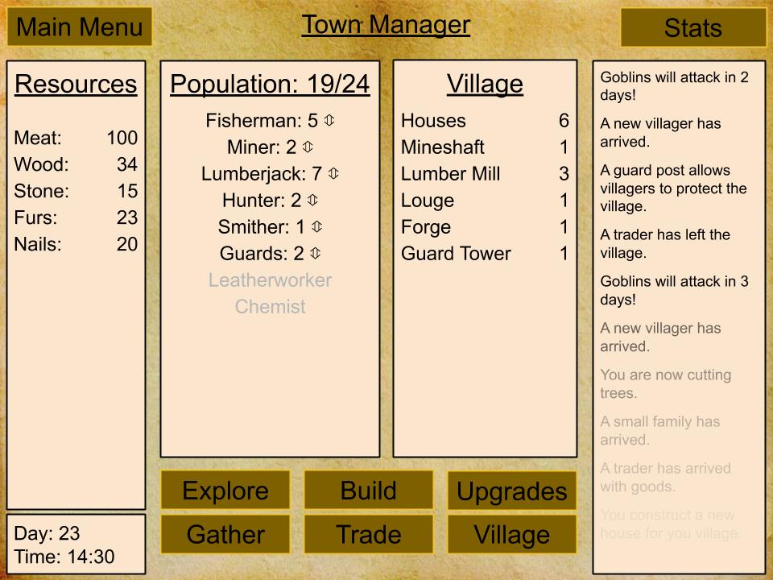

Overview
HinterWorld
Hinterworld is a text-based idle game in which players gather resources, build a village, and level up. Players start by gathering resources by clicking on the button to perform the task. Once they build a house they can begin to recruite villages to assist them in gathering resources. As the player progresses they will unlock new upgrades, buildings, resources, and improvements for their village.
Screenshots
